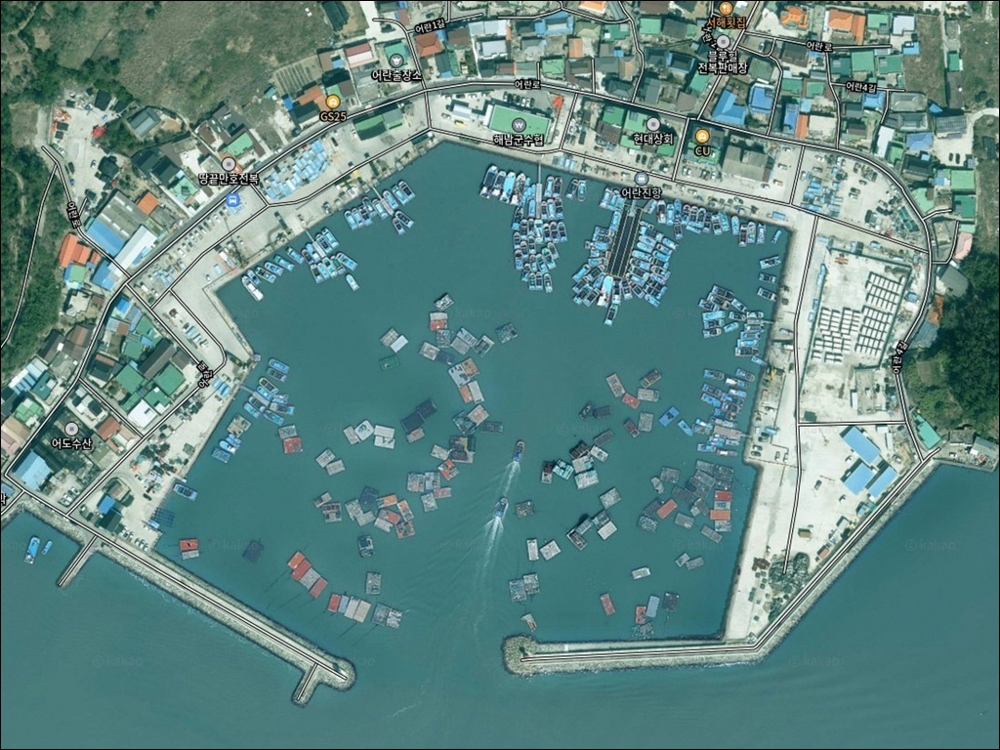
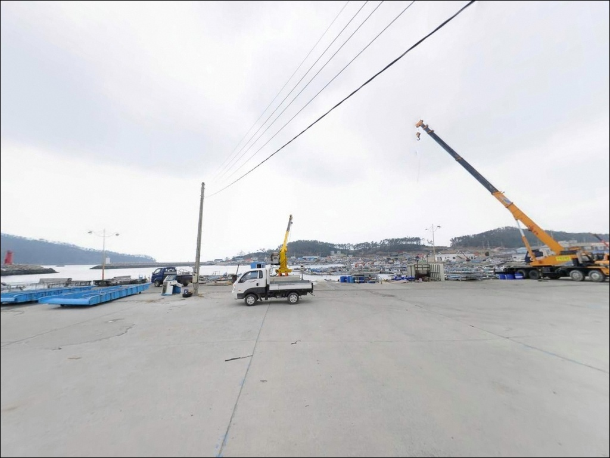
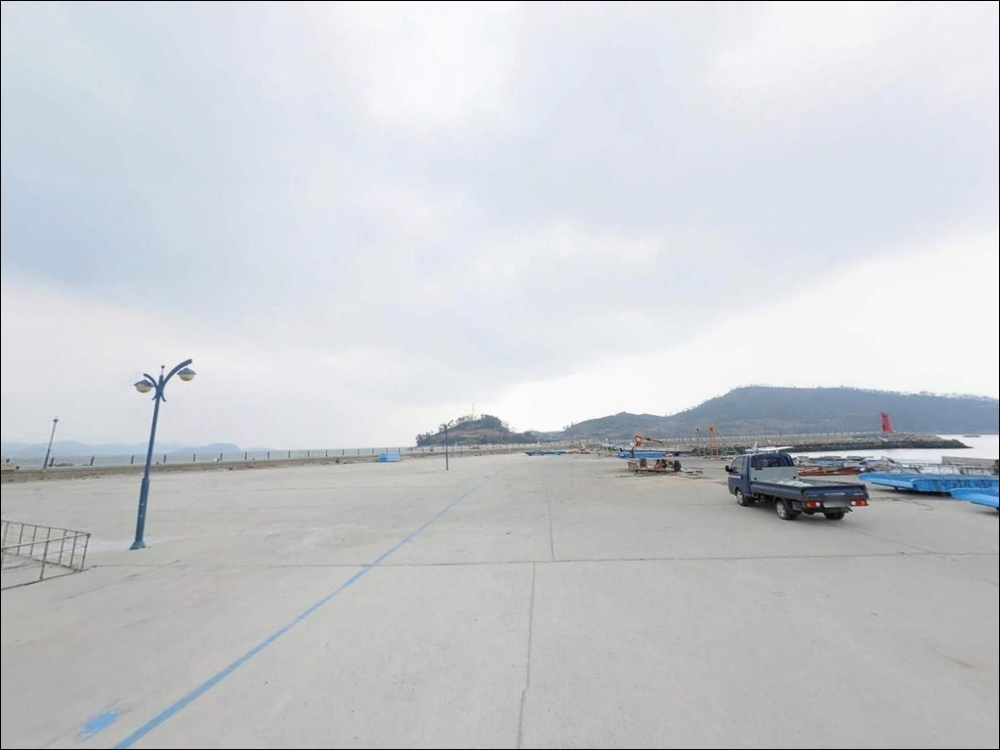
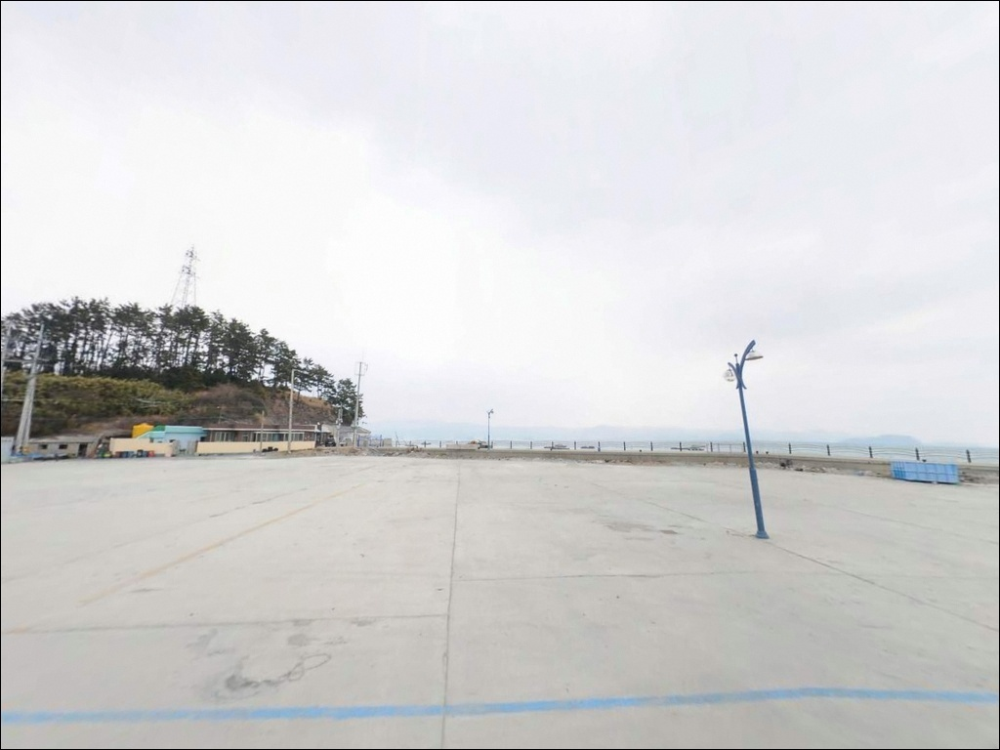
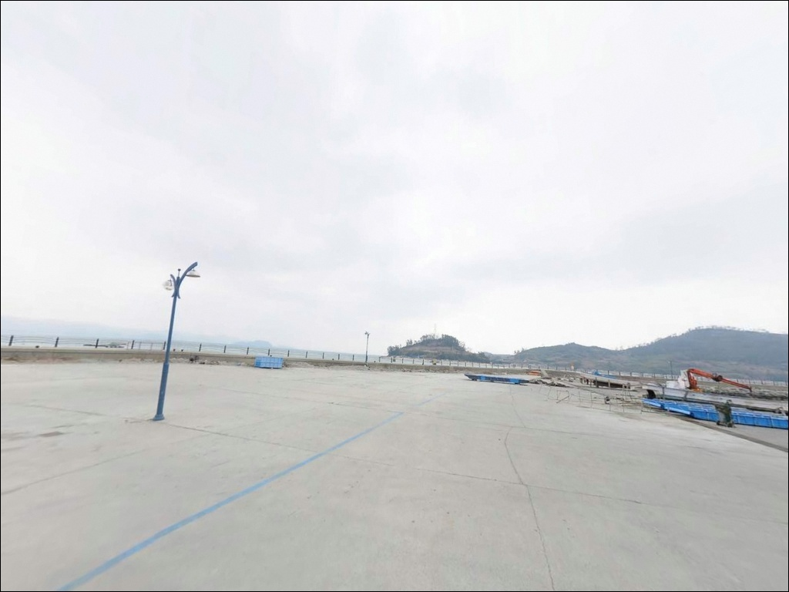
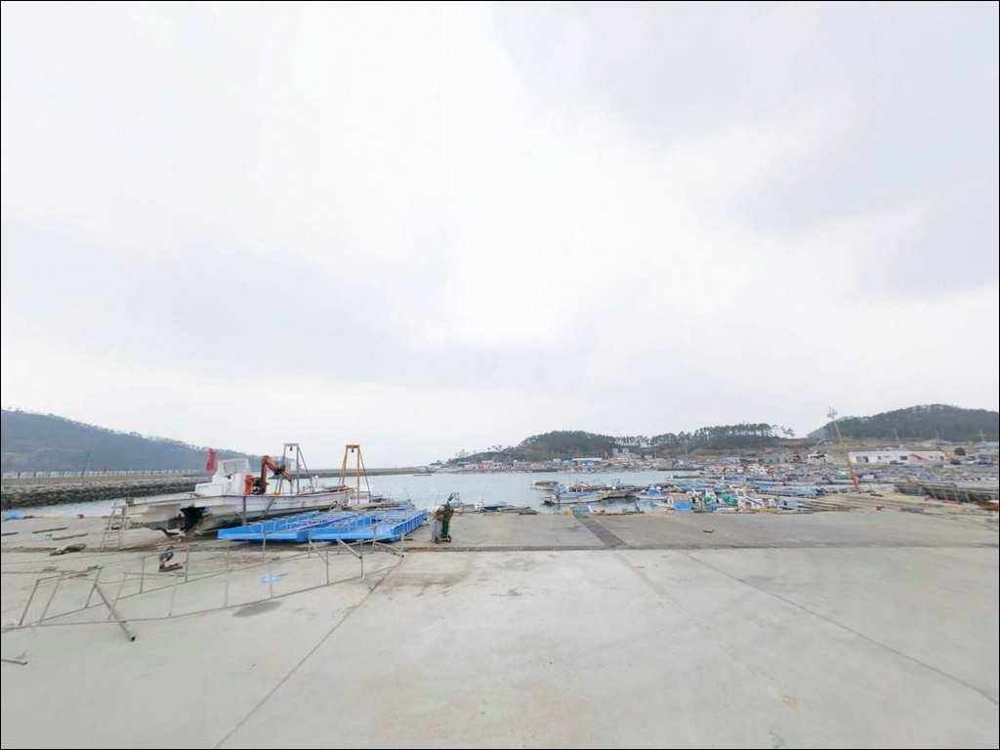
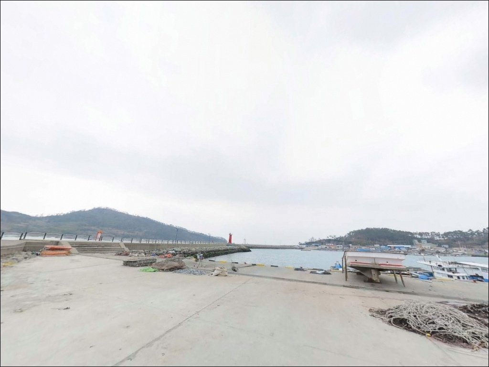
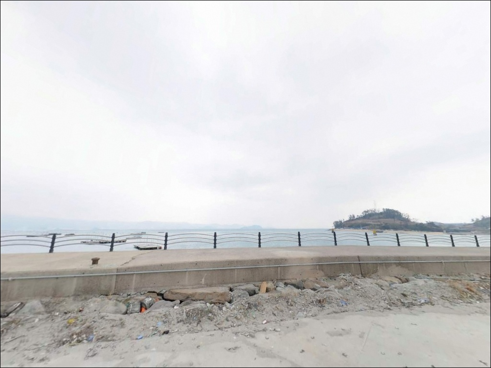
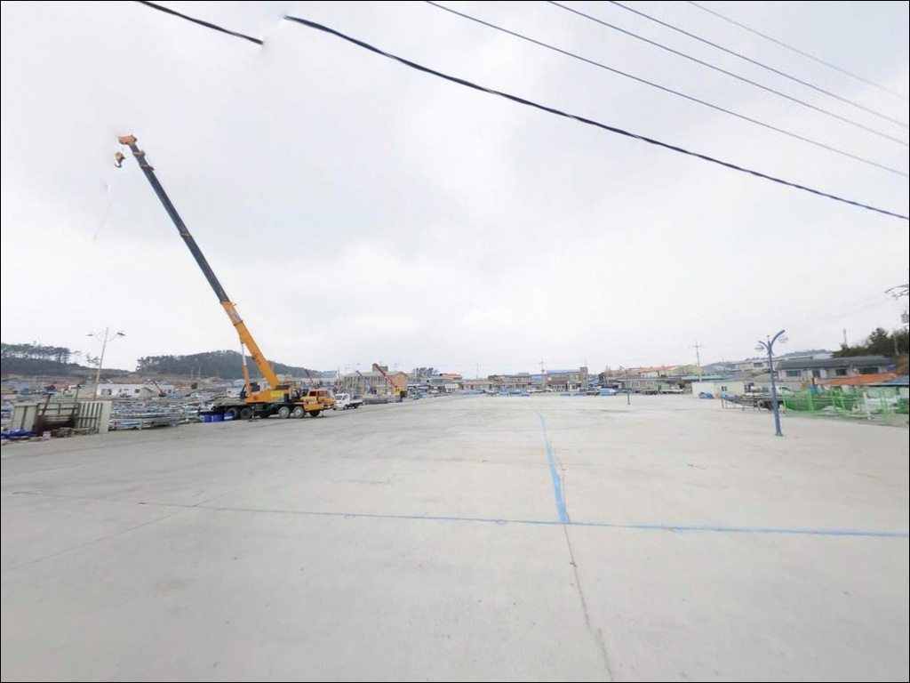

어란진항, 전남 해남군 잔잔한 수면을 바라보며 차박과 낚시를 즐기기 좋은 바다
이 페이지에는 광고(제휴 링크 포함)가 있으며, 광고 링크를 통해 구매하면 운영자가 판매 수익 또는 수수료를 받을 수 있습니다. 포인트 사진: 카카오맵 스카이뷰·로드뷰. 이 페이지의 지도·사진 이미지는 카카오맵의 실제 서비스 이미지와 다를 수 있습니다.


포인트 안내
어란진항
전남 해남군 송지면 어란리 2045
어란진항에서 가장 많이 틀리는 판단은
두 방파제를 동일한 채비와 방식으로
공략하는 것입니다.
동방파제(280m)는 뻘밭 바닥에 수심이 얕고,
서방파제(200m)는 끝단 외항 방향으로
갈수록 수심이 깊어지고 조류 영향이 강해집니다.
같은 항구 안에서도 자리와 물때에 따라
결과가 달라지는 구조입니다.
전남 해남군 송지면 어란리 2045,
어란진항은 1971년 국가어항으로 지정된
해남 유일의 국가어항입니다.
앞바다의 어불도가 외해 파랑을
자연스럽게 막아주는 위치에 있어
항 내부의 낚시 환경은 비교적 안정적인 편입니다.
이 글은 어란진항의
방파제별 지형 조건, 물때에 따른 낚시 전략,
진입과 차박 여건에 집중합니다.
조황 단정이나 특정 어종 보장은
이 글의 범위에 포함되지 않습니다.

1. 포인트 위치 및 진입 동선 분석
어란진항 진입은 서해안고속도로 목포IC를 기준으로
독천·해남을 거쳐 화산·송지 방향으로 이어지는 동선이 기본입니다.
광주 방면에서는
영암·강진·해남을 거쳐 송지면까지 진입합니다.
어란로 포장도로로 항구까지 연결되어 있어
진입 과정 자체에 큰 어려움은 없는 편입니다.
국가어항 규모답게 항 내부 부지가 넓어
대형 차량도 회차가 가능한 수준입니다.
항 내 주차장(장애인 전용 구역 포함)이 마련되어 있어
차를 세우고 방파제까지 도보 이동하는 방식이 기본 동선입니다.
서방파제 끝단까지 이동 거리가 있는 편이라
낚시 장비 운반 카트를 준비하면 이동이 수월합니다.
어민들의 어업 작업 동선이 오가는 항구이므로
주차 위치 선정 시 작업 구역과의 간격을
먼저 확인하는 것이 기본입니다.
어선 계류 구역이나 하역 공간에 가깝게 주차하면
이동 요청을 받을 수 있습니다.

2. 차박 환경 평가 및 야간 체류 여건
어란진항은 항 내 주차장이 갖춰져 있어
낚시를 마치고 차 안에서 하룻밤 머무는 것 자체는
가능한 구조입니다.
다만 어촌 마을과 인접해 있어
야간에도 완전한 고요를 기대하기는 어렵고,
어선 출입과 작업 차량이 이른 새벽부터 시작되는
항구 특성상 수면 환경은 편안하지 않을 수 있습니다.
방파제 끝단 쪽으로 갈수록
가로등 광원이 줄어드는 구조라
야간 낚시를 계획한다면
개인 조명 장비는 필수입니다.
어불도가 외해 파랑을 막아주는 위치 덕분에
바람이 강한 날에도 항 내부는 상대적으로 안정적인 편이지만,
외항 방향은 기상 영향을 직접 받는 구간이 있습니다.
차박을 메인으로 계획하기보다
낚시 후 보조 체류 수단으로 접근하는 편이
이 포인트의 성격에 맞습니다.
더 정돈된 야간 환경을 원한다면
인근 송호해수욕장 방향 주차 공간을
대안으로 검토하는 것도 방법입니다.


3. 주변 편의시설 및 인프라 현황
어란진항 반경 3km 이내에는
편의점이나 식당을 기대하기 어렵습니다.
어란리 마을 내 소규모 상점이 있지만
운영 여건은 현장에서 직접 확인해야 합니다.
출발 전 해남읍에서 식수, 식량, 낚시 소품, 연료까지
완전히 준비하고 진입하는 것이 현실적인 준비 방식입니다.
반경 10km 방향으로 나가면
땅끝마을(갈두항) 일대에 닿습니다.
땅끝전망대와 해양자연사박물관 등
관광 시설이 있고,
방파제 낚시도 가능한 곳이라
어란진항과 묶어 이동하는 동선으로
활용할 수 있습니다.
응급 상황 발생 시 송지면 소재지 내
보건지소와 약국이 이동 가능한 범위에 있습니다.
출발 전 비상약품과 수분 준비는
기본으로 갖추는 것이 좋습니다.

4. 방문 전 반드시 챙겨야 할 준비사항
가장 먼저 확인해야 할 것은 물때입니다.
바다타임에서 어란진항 코드 78번으로 검색하면
해당 날의 물때를 정확히 확인할 수 있습니다.
물때에 따라 동방파제와 서방파제 중
어느 쪽이 더 유리한지가 달라지는 구조라
출발 전 확인이 필수입니다.
서남해 특성상 기상 변화가 빠른 편이므로
기상청 예보를 출발 당일 아침 다시 확인하는 것이 기본입니다.
어불도가 파랑을 막아주지만
외항 쪽은 바람 영향을 받는 구간이 있어
강풍 예보가 있는 날은 공략 구간을 조정해야 합니다.
동방파제 뻘밭 바닥 특성상 밑걸림 손실이 생길 수 있어
채비를 넉넉히 준비하는 편이 좋습니다.
방파제 낚시의 기본 안전 수칙인
구명조끼 착용과 야간 개인 조명은
어떤 자리를 잡더라도 갖춰야 합니다.
어업 구역 어구나 선박 계류 로프 근처에서의 낚시는 피하고,
낚시 후 발생한 쓰레기는
직접 가져가는 것이 기본 매너입니다.

5. 동방파제와 서방파제, 낚시 자리가 달라지는 조건
어란진항 낚시 여건을 이해하려면
어불도의 위치를 먼저 파악해야 합니다.
어불도가 외해 파랑을 직접 막아주는 위치에 있어
항 내부의 수면은 비교적 안정적인 편이고,
이 구조가 방파제 낚시 환경에
유리한 조건을 만들어주는 핵심 지형 요소입니다.
동방파제는 길이 280m에 수심이 얕고
전반적으로 뻘밭 바닥입니다.
조류 영향이 약한 편이라
원투 채비가 비교적 안정적으로 내려앉는 구간이며,
발밑 10m 이내 범위에서 바닥 어종을 노리는 방식이
이 지형 구조에 맞습니다.
서방파제는 길이 200m에 수심 4~5m 수준이며,
끝단 외항 방향으로 갈수록
수심 변화와 조류 영향이 강해지는 구간이 형성됩니다.
서방파제 끝단 외항 방향은
어불도가 파랑을 막아주면서도
조류 흐름이 살아 있어
찌낚시 자리로 적합한 구간입니다.
소방파제는 길이 약 50m, 수심 3~4m 수준으로
규모가 작지만 접근 가능한 구조입니다.
최신 조황은 출조 전에 꼭 검색해 보시기 바랍니다.


6. 포인트에 적합한 낚시 스타일 제안
원투낚시는 동방파제에서 가장 잘 맞는 방식입니다.
뻘밭 바닥과 약한 조류 흐름 조건에서
채비를 발밑 10m 이내 범위에 집중해
바닥 어종을 노리는 방식이 유효합니다.
조금 물때 전후가 이 방식에 적합한 타이밍이며,
봉돌이 뻘에 파고들지 않을 정도의
무게 조절이 기본입니다.
이 지형 구조에서 기대해 볼 수 있는 어종으로는
붕장어·도다리 계열이 있습니다.
찌낚시는 서방파제 끝단 외항 방향을 주력 구간으로 삼는 방식이
이 포인트에 맞습니다.
사리 물때에 외항 방향으로 조류가 생기는 구간에서
찌를 흘리는 패턴이 기본이며,
항 주변에 넓게 분포한 김양식장 지형 구조가
조류 흐름의 방향을 잡는 데 영향을 줍니다.
이 지형에서 기대해 볼 수 있는 어종으로는
감성돔·숭어·학공치 등의 회유성 어종이 있습니다.
에깅은 두족류 시즌에
방파제 내측 홈통 구간을 공략하는 방식으로 활용할 수 있습니다.
조류가 약해지는 홈통 구간은
갑오징어·주꾸미 계열 두족류가 머무르기 좋은
지형 조건을 갖추고 있습니다.
볼락 라이트게임은 야간에
방파제 주변 석축 구간을 소형 지그헤드로 탐색하는 방식이
어울립니다.
뻘밭 바닥 구조의 동방파제에서는
채비를 발밑 10m 안쪽 범위에 집중해야
밑걸림과 손실을 줄일 수 있습니다.

7. 대안 포인트 및 플랜 B 동선
어란진항에서 여건이 여의치 않을 때
가장 먼저 이동할 만한 포인트는
내장리방파제입니다.
어란진항 인근 해안에 자리하며
민어 낚시가 이루어지는 포인트로 알려진 곳입니다.
다만 편의시설이 없어
자급 준비를 갖추고 방문해야 합니다.
차량으로 약 15분 거리에 있는
땅끝항(갈두항) 방파제도 대안으로 삼을 수 있습니다.
항구 주변 방파제와 연안에서
워킹 낚시가 이루어지는 곳이며,
진입 여건이 안정적인 편입니다.
땅끝마을 주변 주차 공간은
어란진항보다 차박 체류 여건이 나은 편이라
플랜B 차박 대안으로도 검토할 수 있습니다.
해남 북부 방향에 있는
화산 상마리·구성리 갯바위는
감성돔 갯바위 포인트로 알려진 곳입니다.
어란진항에서 이동 거리가 다소 있지만
갯바위 찌낚시를 원하는 경우
플랜B 동선으로 엮어볼 수 있습니다.

어란진항은 자리와 물때를
고르는 포인트입니다
찌낚시가 목적이라면 사리 물때에 맞춰
서방파제 끝단 외항 방향,
원투낚시가 목적이라면 조금 물때에
동방파제 쪽을 우선하는 것이
이 포인트를 공략하는 기본 판단 구조입니다.
어불도가 외해 파랑을 막아주는 덕분에
기상이 다소 나쁜 날에도
항 내부는 비교적 안정적인 낚시 여건이 유지됩니다.
국가어항 정비사업이 진행 중이라
시설 여건은 계속 개선되고 있습니다.
주차장이 있어 진입 자체는 수월하지만,
어업 작업 중심 항구라
차박은 자리 선정을 신중하게 해야 합니다.
에깅이나 찌낚시를 즐기는 낚시인이라면
물때와 방파제를 고르는 습관이 있을 때
이 포인트의 잠재력이 더 살아납니다.
낚시를 마치고 항 주차장에서
조용히 하룻밤 머무는 차박을 고려한다면,
어업 동선을 먼저 확인하고 자리를 잡는 것이
어란진항을 알차게 이용하는 기본 순서입니다.